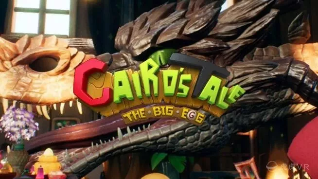

Shennong: Taste of Illusion
If you are a great fan of Chinese legends, or want to know about it, <<Shennong: Taste of Illusion >> is your best choice.
In the 12 minutes, Pinta Studio uses VR to describe the epic story of Shennong combating illusional monsters after eating a poisonous plant.
（Fresh Out）
How would the world be like… if you are in the perspective of another creature. In <<fresh out>>, the player will be stepping on to a quick and exciting adventure with three carrots in the world where carrots established their kingdom.

Cairo's Tale: The Big Egg）
Cairo's Tale: The Big Egg is a VR animated short about the adventure of young mage Cairo and his best friend Clusterclucked. Cairo is the youngest member of the big mage Family BoBo. He was born with great talent and good at the magic of creation. But Cairo can’t concentrate on doing one thing for long.
Pearl
An animated musical short film. Much like Feast, it is a wordless film that tells the story of a relationship over a long period of time; in this case, it’s a father and daughter, and the entire thing takes place inside of a car, as it travels across the country.
Crow: The Legend
The carefree forest animals imagine spring will last forever. However, winter comes and the animals soon realize that their lives are in danger. What they need is a hero; what they need is Crow: The Legend.
Hue
Hue” is a young writer whose loss of interest in life manifests as a literal lack of color in the world. By nudging and directing him with an Oculus Touch controller, a participant can help him move through a series of vignettes that help him rediscover joy.
Son of Jaguar
In the most important match of his life, the once mighty masked luchador, Son of Jaguar, faces his legacy, his family, and what it means to be a part of something bigger than himself.
MANIFEST 99
MANIFEST 99 is an ominous and eerie story about finding redemption in the afterlife. Set on
a mysterious train rambling through an unknown void, you assist four travel companions on
their journey to their final destination. Using character engagement as a method of movement,
Manifest 99 explores scale and navigation unlike any other VR experience.
Wolves in the Walls

In the “Wolves in the Walls” VR experience, Lucy takes the viewer into that imaginary world, with the stroke of a pen: Lucy draws us as her imaginary friend, making is come to life line by line. That’s a clever little trick to answer the question most narrative VR still struggles with: Why are we there? Which role are we as viewers playing in the action?